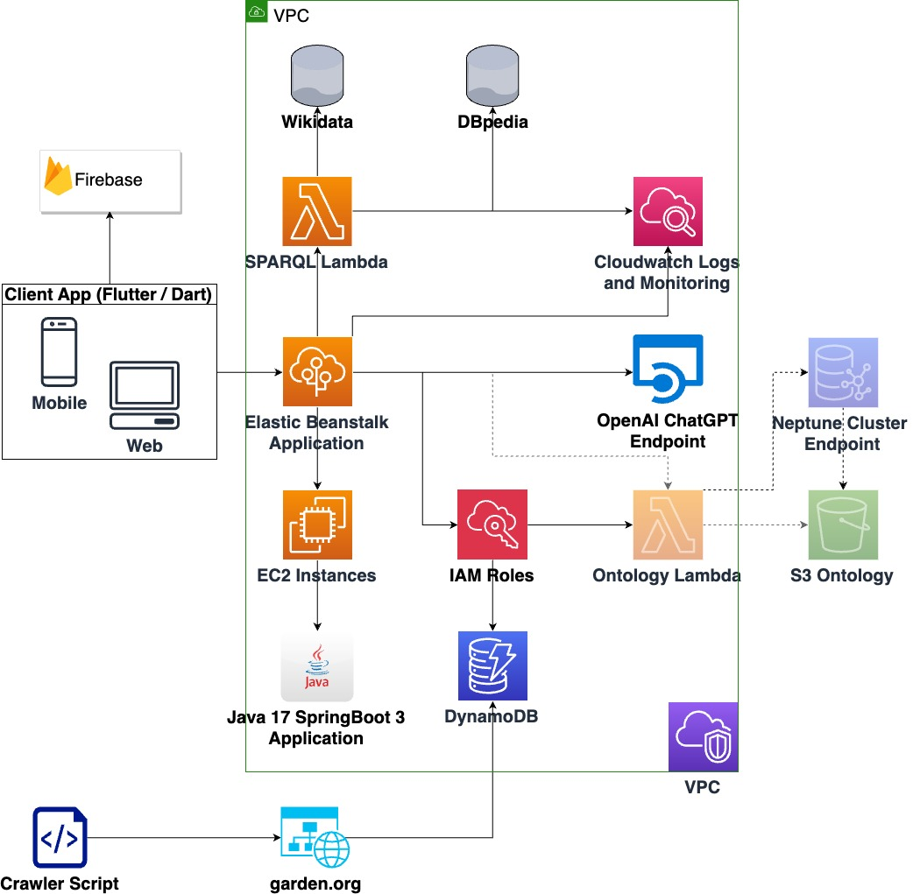

8. Technical Deep Dive
Infrastructure Diagram
Details regarding the Backend implementation
In the implementation of our application, we leveraged the robust capabilities of Spring Boot and Java to develop a seamless BackEnd architecture. Our choice of using Spring Boot allowed us to efficiently expose endpoints for smooth communication between the FrontEnd and BackEnd components.
For data storage, we opted for a DynamoDB table, a NoSQL database service, to streamline the management and retrieval of garden-related information. This decision aligns with our commitment to enhancing the overall user experience by ensuring quick and effective data storage and retrieval.
Adhering to Java conventions, we organized our codebase into well-structured packages, including controller, service, model, and repository. Within each of these, we further implemented an abstract class, fostering code reusability and minimizing redundancy. This abstraction approach involves creating a dedicated abstract class for controllers, services, repositories, and models, effectively eliminating duplicate code and promoting a cleaner, more maintainable codebase.
Moreover, to handle negative scenarios and enhance the robustness of our application, we implemented custom exceptions. These exceptions address specific error scenarios and contribute to more informative error handling, providing a better experience for users and aiding in the troubleshooting process.
In summary, our BackEnd implementation revolves around the powerful combination of Spring Boot and Java, leveraging DynamoDB for efficient data management. The adherence to Java conventions, strategic package organization, and the implementation of abstract classes for each essential component showcase our commitment to creating a scalable, maintainable, and robust application. Additionally, the incorporation of custom exceptions underscores our dedication to addressing and managing potential negative flows within the system.
Details regarding the FrontEnd implementation
In crafting the FrontEnd of our application, we embraced the versatility of Flutter with Dart, delivering an intuitive and engaging user interface. The authentication system is seamlessly integrated using Firebase, providing users with a secure and streamlined login experience.
One of the unique features of our FrontEnd is the voice-based interaction with an AI specializing in plant knowledge. Users can effortlessly communicate with the AI through voice commands, receiving responses both in text and text-to-speech format. This functionality enhances user engagement and accessibility.
Furthermore, we implemented a dedicated page for SPARQL queries, allowing users to interact with the application's underlying data using this powerful query language. This feature empowers users to extract specific information based on their preferences.
Our FrontEnd design follows a user-friendly flow, starting with a homepage that showcases various gardens. Clicking on a garden redirects users to a detailed page containing comprehensive information about the garden, including a list of events. Users can click on specific events to be redirected to the event's URL for further details.
Additionally, we incorporated an exhibition list, providing users with a curated collection of exhibitions. Clicking on an exhibition leads to a dedicated page with detailed information about the exhibition and a list of plants it contains. Users can explore individual plants by clicking on them, revealing specific plant details. Notably, users have the option to execute pre-made SPARQL queries related to the selected plant, enhancing their exploration experience.
In summary, our FrontEnd implementation revolves around Flutter with Dart, seamlessly integrating Firebase for authentication. The user experience is enriched with voice-based interaction with an AI, dedicated pages for SPARQL queries, and a user-friendly flow that facilitates exploration of gardens, events, exhibitions, and plants. This comprehensive design ensures a visually appealing and highly functional interface for our users.
Details regarding the Cloud implementation
TO DO
9. User Guide for BotaniqScape
Welcome to BotaniqScape, the comprehensive app for exploring gardens, exhibitions, and plant-related information. This guide will help you navigate the app with ease, whether you're a new user or just looking for more information.
Getting Started
Installation and Access
- Mobile Version: Download the app from your device's app store.
- Web Version: Access the app through its website.
Home Page
Upon entering the app, you are presented with two main options:
- Visit Us Button: Click this to visit the app's GitHub repository.
- Auth Page: Navigate here to create an account or log in.
Authentication Page
- Create an Account: If you're a new user, sign up by providing the necessary details.
- Log In: Existing users can log in using their credentials.
Main Features
Browsing Gardens
On the main page, you can explore various gardens. Click on a garden to see its events, exhibitions, and detailed information.
Events and Exhibitions
Events: Clicking on an event redirects you to its social media page for more details.
Exhibitions: Select an exhibition to view its page within the app, where you can:
- Read about the exhibition.
- See all plants featured in it.
- Click on a plant to learn more about it.
Burger Menu
- Access your personal information via the burger menu.
- AI Voice Assistant: Interact with the app using voice commands through this feature.
- SPARQL Page: Here, you can:
- Execute one of three pre-made queries about plants.
- Create and run your own queries to retrieve plant information.
Learning More about Plants
- From Exhibition to Plant Details: While exploring an exhibition, you can click on any plant to navigate to its specific page.
- Detailed Plant Information: On the plant's page, select “Learn More” to perform a SPARQL query. This action gathers all available data about the selected plant, offering in-depth information.
Tips for a Better Experience
- Regular Updates: Keep the app updated for the latest features and improvements.
- Feedback: Use the 'Visit Us' feature for any queries or feedback.
Troubleshooting
If you encounter any issues, refer to the 'Visit Us' section in the app or contact customer support.
Thank you for choosing BotaniqScape. We hope you enjoy exploring the world of gardens and plants with us!
10. Demo Time!
AI Integration
Visit the Personal Plant Assistance Demo to see the interaction with our app. You can engage with the user via microphone, and witness the application's ability to understand and translate speech, sending requests to the AI for analysis and receiving real-time responses.
Demo App
Explore the application's flow and functionalities in this comprehensive video: App Flow and Live Demo. The video guides you through each page and possible scenarios, showcasing the user-friendly design of the app. Witness the real-time operation of the login table by creating a user and logging in with the respective credentials.
Moreover, the video provides a unique opportunity to observe SPARQL queries in action. Gain insights into the intricacies of these queries as they are executed, enhancing your understanding of the application's dynamic behavior.
Demo Postman
Experience the dynamic aspect of our application in this engaging video: Dynamic Application Feature Demo. The video showcases the live request to add a new garden to the AWS DynamoDB table, illustrating how the garden is dynamically added to the app in real-time. Witness the subsequent delete request, demonstrating the seamless removal of the garden, emphasizing the application's responsive and interactive capabilities.
11. Authors
Alex Amarandei

I am keen on lifelong learning and I try to expand my field of knowledge with every occasion. I am a hard worker and a proficient Team Player ready to tackle any kind of interesting challenges!
Andrei Zaharia

Devoted software engineer with a passion for problem-solving. Coding enthusiast, always up for a coding challenge, and forever curious about the next big thing in tech.
12. Acknowledgements
We extend our heartfelt gratitude to our instructor whose expertise illuminated our path during the master's degree Web Application Development Course.
Special thanks to our fellow students for their collaborative spirit and innovative ideas that shaped BotaniqScape.
Our families and friends provided unwavering support, and to the lines of code and bugs conquered - you are the unsung heroes.
BotaniqScape is a testament to collective effort, passion, and resilience, reflecting our shared journey in the world of software engineering.